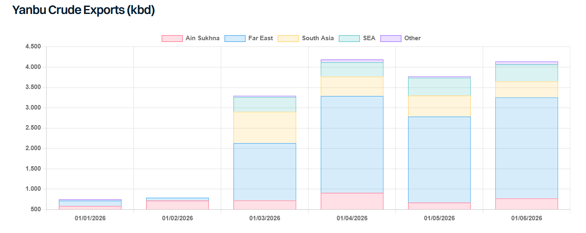

With the Houthis declaring a full naval blockade specifically against Saudi Arabia on 20 July and threatening any vessel calling at Saudi ports, the southern Red Sea faces heightened security risk. Within days of the announcement, the Houthis claimed strikes on two tankers have effectively paralyzed direct Yanbu-to-East exports through the Bab-el-Mandeb.
Since the Hormuz disruption began, Saudi Arabia has pushed crude west through the East-West pipeline to Yanbu, maintaining export volumes at roughly 3.5-4.0 mbd after local refinery draws, with nearly all destined for Asia. With the direct southern route largely blocked, Asia-bound Yanbu barrels are forced to head north toward the Suez Canal and/or the SUMED pipeline before embarking on a massive detour around the Cape of Good Hope (COGH). Taking a fully laden VLCC through Suez is impossible due to draft limits, forcing charterers to short-load at Yanbu or part-discharge at Ain Sukhna, both adding cost and transit time. An alternative two-vessel transshipment strategy via SUMED avoids these draft limitations, but the 2.5 mbd pipeline has limited spare room to handle such an influx, while Red Sea shuttle runs rely on a small pool of dedicated units. Offtaking crude directly from existing storage at Sidi Kerir – where inventory is reportedly around 15mbbls – offers a temporary workaround, though this still leaves charterers facing the extended detour to reach Asian buyers.
This routing friction is further compounded by a severe vessel positioning deficit across both main crude segments. Sourcing ballasting VLCCs from the Med/Atlantic to reach Yanbu presents an immediate bottleneck, as West-of-Suez ballaster availability is sitting at a thin 74 units, roughly 10% of the mainstream VLCC fleet. A short-term deficit of VLCCs able to reach Yanbu on time looks likely, which could drive freight rates higher. Charterers could alternatively switch to Suezmaxes, which can transit Suez fully laden, but this reduces Yanbu loading efficiency and loses economies of scale. Furthermore, while most Suezmaxes are concentrated in the West and could theoretically position to the Red Sea quickly, Atlantic Basin demand has been exceptionally strong this year. Pulling Suezmaxes away from Western trades to position into Yanbu could tighten effective fleet supply in the Atlantic. However, much will depend on whether Suezmax trade into Europe is negatively impacted by greater availability of Yanbu barrels in the Mediterranean. Recent CPC pipeline suspensions following tanker attacks in the Black Sea further complicate the picture, as Europe will need replacement barrels.
If the rerouting materialises, overall crude ton-mile demand would receive a significant boost. A Yanbu-Suez-Cape of Good Hope-Ningbo voyage is around 15,257 nm – roughly 130% longer than the usual route. If all Yanbu crude volumes bound for the East are rerouted via Suez and the Cape of Good Hope, the loss of stranded Middle East barrels could be more than offset, resulting in around 2% net monthly growth in crude ton-mile demand. However, some cargoes could still move via the Bab el-Mandeb or on shorter-haul voyages into Europe instead.
Despite these mounting logistical hurdles and near-doubling freight costs, a structural shift in Asian crude trade flows away from Saudi barrels remains unlikely, as the severe supply crunch across the broader Arabian Gulf leaves Asian refiners with no choice but to absorb the additional shipping costs. Usual Yanbu-East freight on VLCCs, recently assessed at mid-to-high $5 per barrel, is expected to surge to mid-to-high $9 per barrel via Suez and the COGH, though this assumes freight rates hold roughly steady. However, there is a clear upside risk to that number: the Houthis’ reach could plausibly extend as far as Yanbu itself. Any escalation would likely demand a war risk premium.
On the refined product side, exports from Yanbu and Jizan moving West have averaged around 560kbd so far this year. However, with the direct southern route now blocked, a major trade flow pivoting is expected, with Yanbu and Jizan clean volumes redirection pushing primarily toward Europe and the Mediterranean via Suez. This leaves East/ Africa particularly vulnerable, given that nearly half of its clean product imports originate from Yanbu and Jizan. While swing suppliers like West Coast India and Duqm would typically backfill this short, recent weak East-West arbitrage economics have kept Indian and Omani barrels directed firmly East toward Asia, leaving little uncommitted volume to cover the African deficit. Consequently, East Africa will either be forced to absorb massive freight premiums to pull Yanbu/Jizan product via the COGH detour, or actively bid up for longer-haul Atlantic Basin cargoes to plug the gap.
Overall, the compounding chokepoint constraints represent yet another layer of operational friction, inflating freight costs, lengthening transit times and weighing on global oil flows. In the short term, these dynamics are clearly bullish for tanker earnings.

Data source:Gibson Shipbrokers